Every metric at once
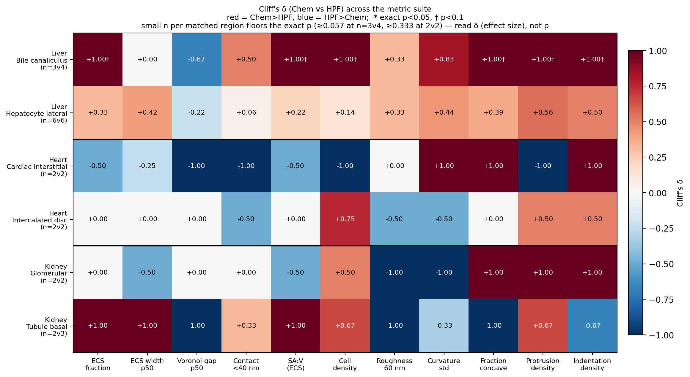
One metric, every crop
Each family at both resolutions, side by side. The matched panel exists to be read against the native one: a difference that survives downsampling to 8 nm is not explained by voxel size. The explorer draws any of these live, for any metric in the family — these are the standing version, so a link keeps working and a panel can be pointed at.
Volume fraction
ECS and cell volume fractions per crop. The most resolution-robust family, so the native panel can be read fairly directly. Native only: the matched run reads zarr metadata that is valid at native resolution alone.
Draw this live — any metric in the family, any grouping, one dot per crop.
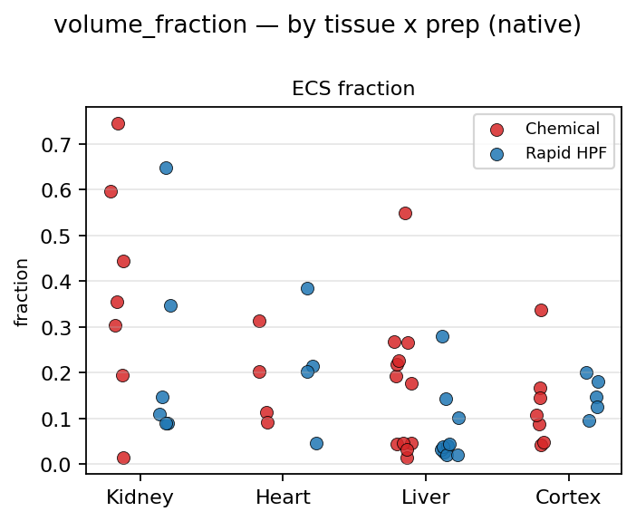
ECS width
Distance from each extracellular voxel to the nearest cell. Distance to the wall, not channel width — roughly a quarter of it.
Draw this live — any metric in the family, any grouping, one dot per crop.
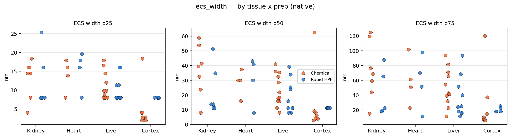
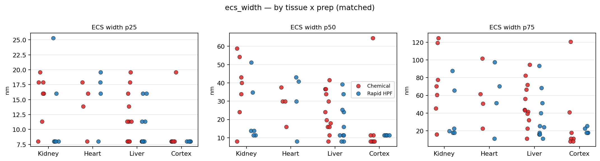
Cell-to-cell gap
Gap between neighbouring cells. Hard floor of three voxels, so the left tail is the measurement, not the tissue; at 8 nm that floor is 24 nm.
Draw this live — any metric in the family, any grouping, one dot per crop.
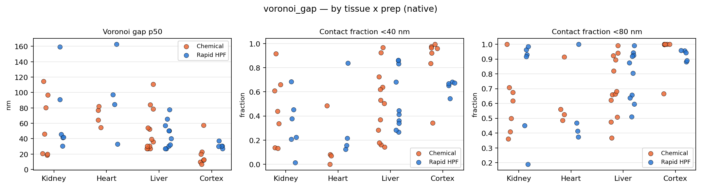
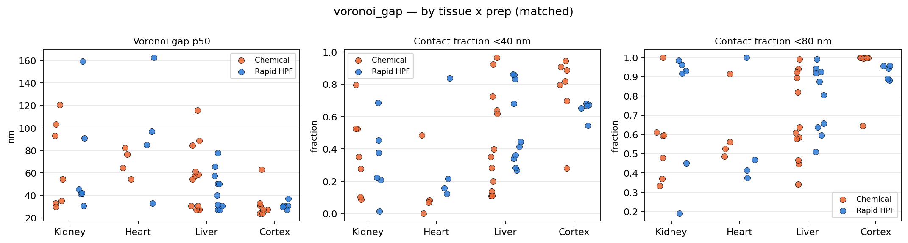
Surface area to volume
ECS-facing membrane per unit cell volume, pooled across the cells in each crop.
Draw this live — any metric in the family, any grouping, one dot per crop.
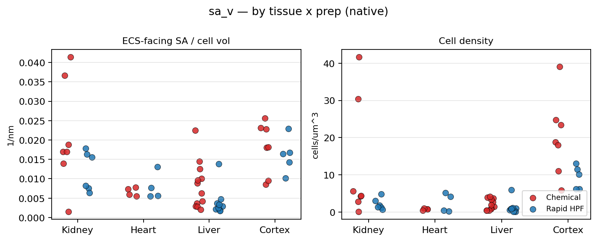
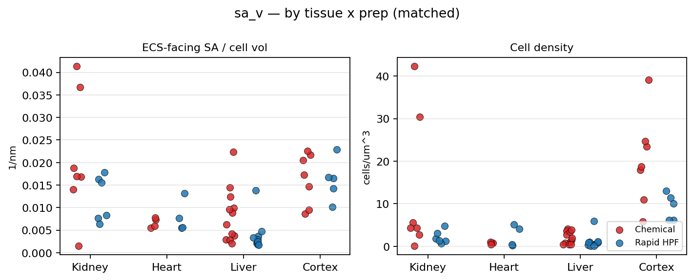
Membrane shape
Curvature, roughness and protrusion density on the ECS-facing membrane. The 30 nm roughness scale is not honestly resolvable in the matched panel.
Draw this live — any metric in the family, any grouping, one dot per crop.
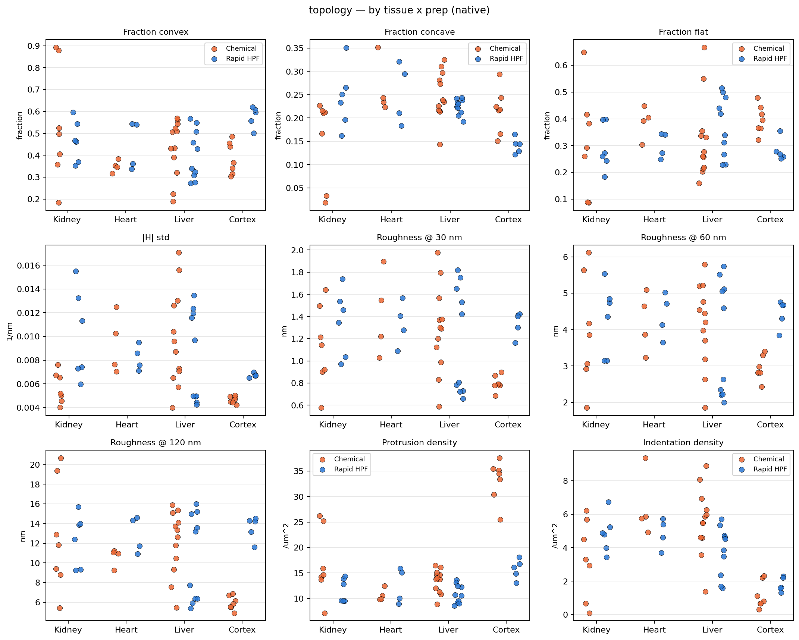
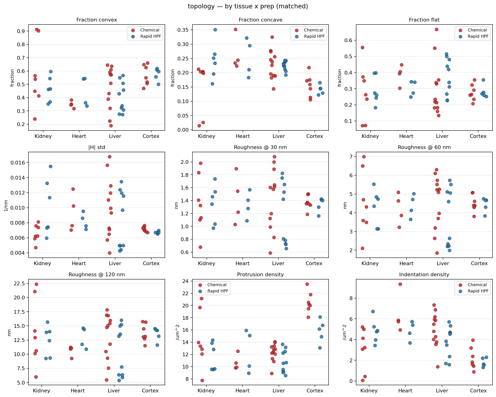
Anatomy-matched summary
The same metrics restricted to the region groups where both preparations have crops. The matched-resolution version is the most conservative view on the site: same regions, same voxel size.
Draw this live — the explorer groups by region by default.
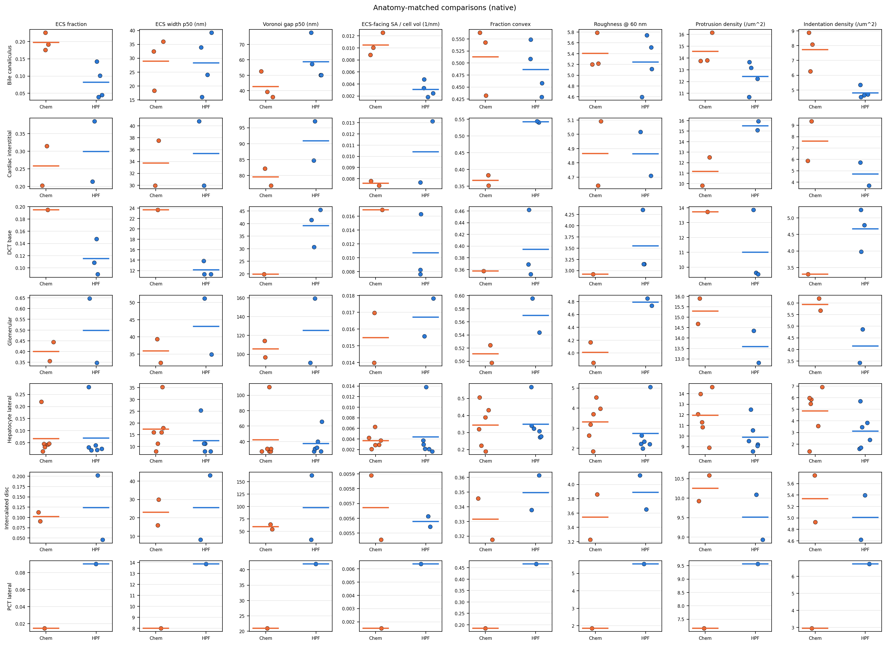
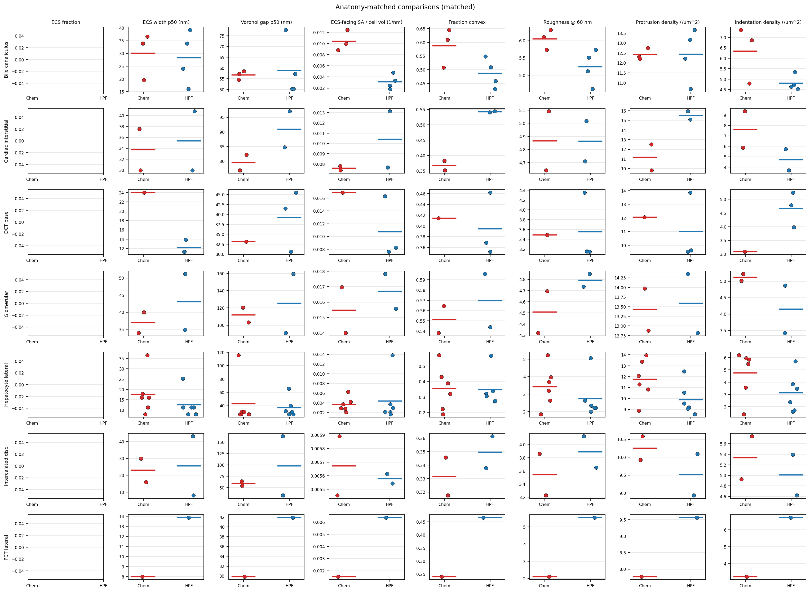
One region, every metric
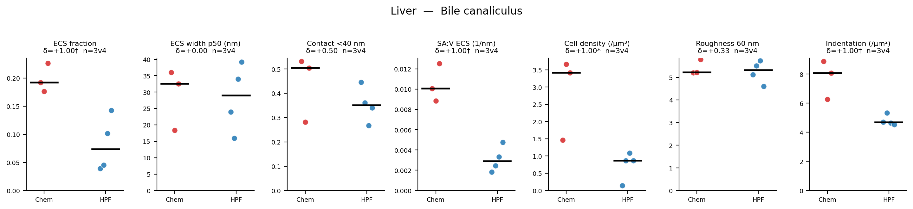
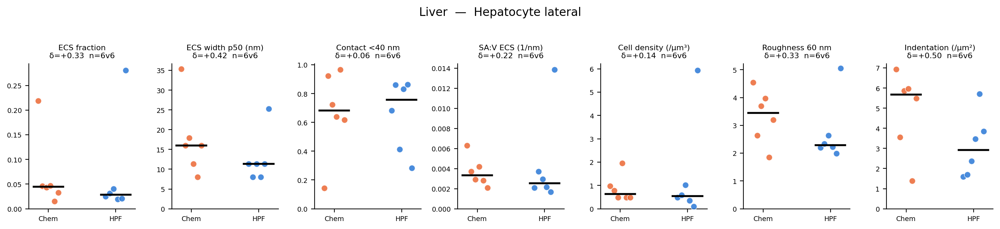
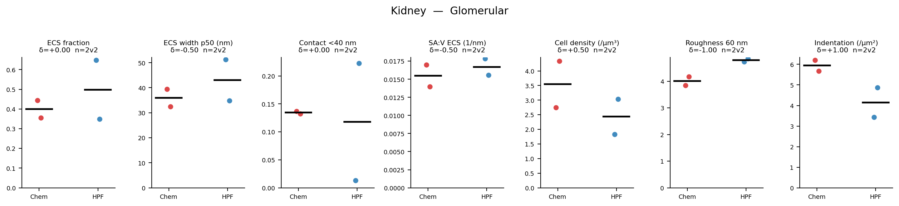
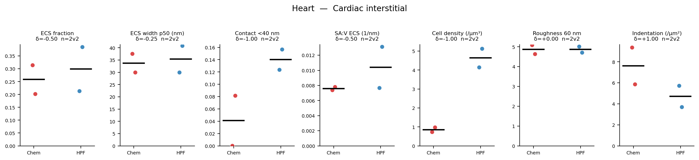
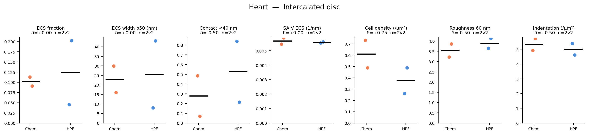
Pictures of the geometry
These are stills. Paired 3D views puts one crop of each preparation side by side per region, and the crop page will load any two of the 55 into a viewer you can turn.
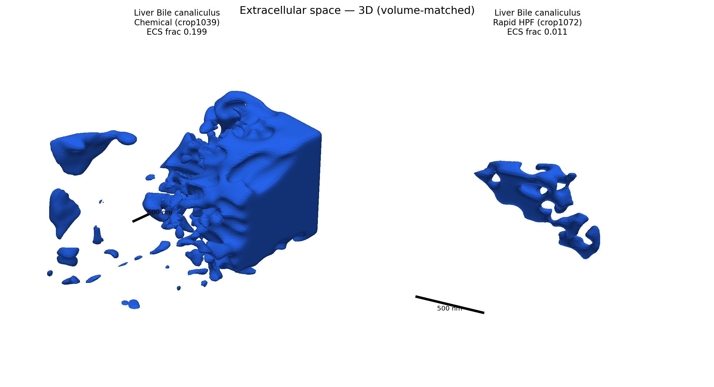
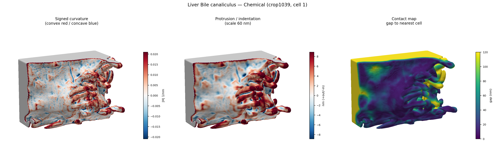
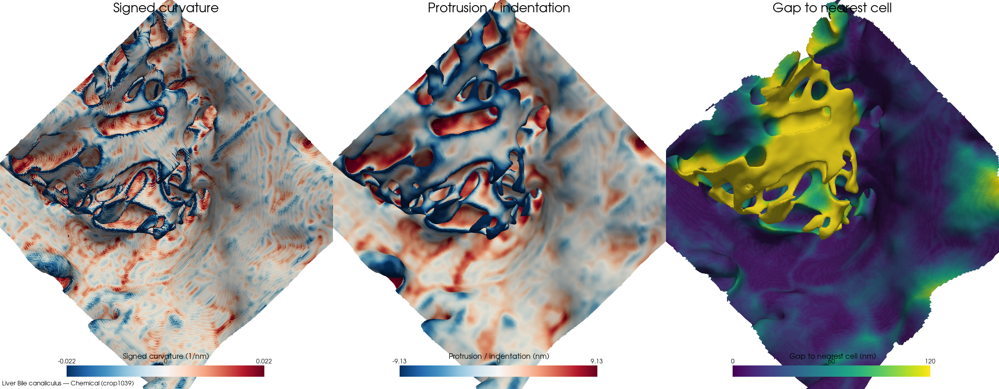
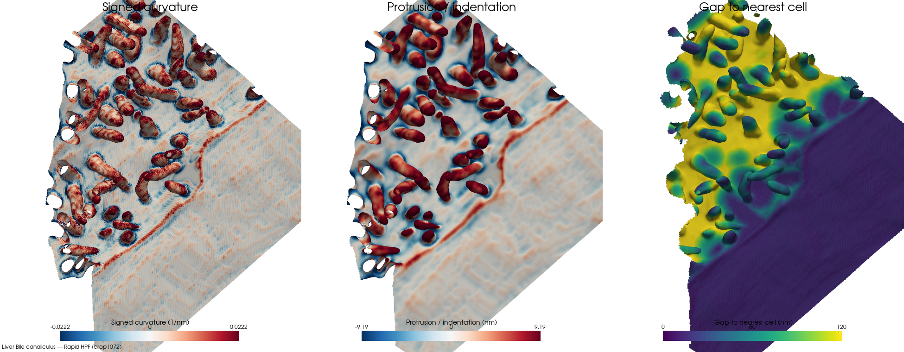